Deep Reinforcement Learning¶
Abstract
- Reinforcement Learning 和 Supervised Learning 最大的区别是：
- 很多时候没有直接的标签 \(y\)，只有环境给出的稀疏 reward。
- Agent 必须通过 trial and error 学会在当前状态下采取什么行动，目标不是让某一步看起来正确，而是让长期累计回报最大。
Part I: Introduction of RL¶
1. Machine Learning Algorithms¶
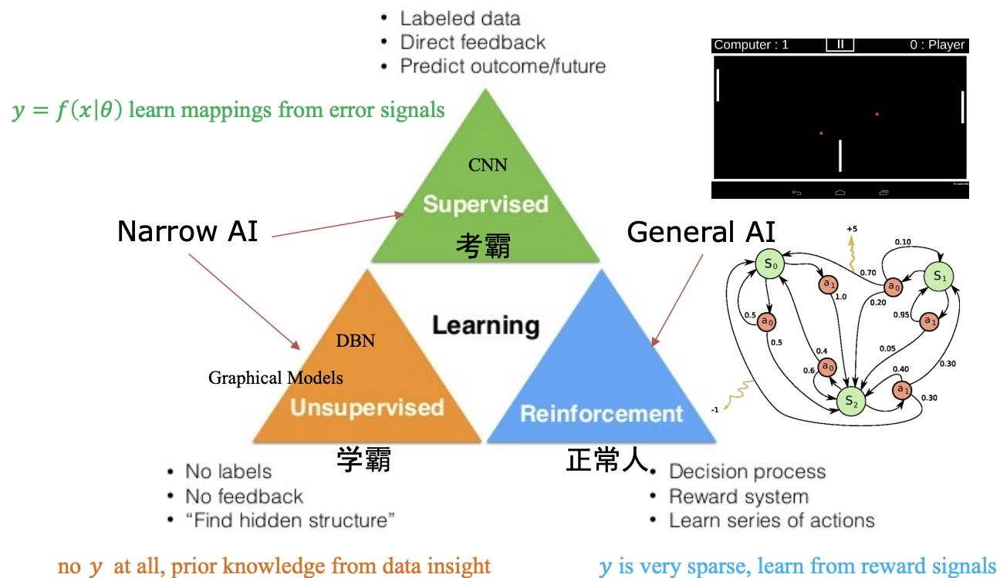
在监督学习中，我们通常学习一个映射：
- 模型通过预测值和真实标签之间的 error signal 更新参数
但强化学习面对的问题更为复杂：
- 没有明确的 \(y\)，reward 可能非常稀疏
- 当前 action 的好坏，可能要过很多步之后才知道
- 数据分布由 agent 自己的行为决定
RL in Humans
人类看起来可以通过很少的 trial and error 学会走路，但这背后可能不只是简单的反向传播：
- Hardware：生物演化已经积累了大量运动结构和先验
- Imitation Learning：人类可以观察别人走路
- Algorithms：大脑可能使用了比普通 SGD 更适合连续交互的学习机制
2. Origins of RL¶
强化学习主要来自两个传统：
- 思想假设：心理学中的行为主义
- learning by trial and error, or search and memory
- Thorndike 的 Law of Effect
- 模型求解：控制论中的最优控制理论
- Bellman equation
- Markov Decision Process (MDP)
- Policy iteration
3. Basic Concepts¶
强化学习关心的是：个体如何在环境给予的奖励或惩罚刺激（Reward -- r）下，逐步形成能获得最大利益的习惯性行为（Actions -- a）
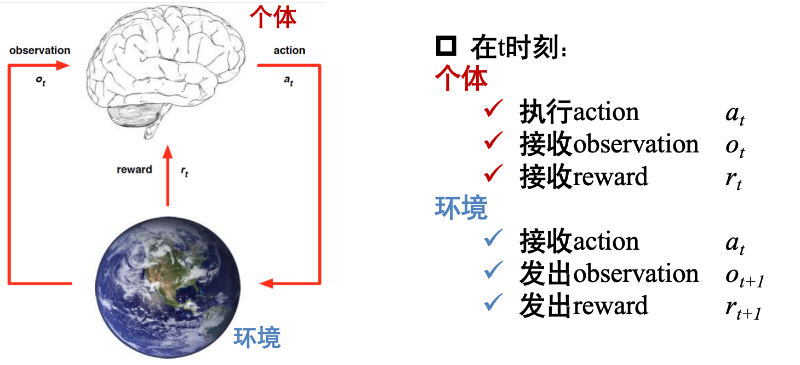
Experience：一系列 observation、action、reward 组成的交互历史：
State：对 experience 的 summary：
- 如果环境是 fully observed 的，则可以认为：\(s_t=f(o_t)\)
- 也就是说，当前 observation 已经包含了做决策所需的全部信息
4. RL Taxonomy¶
强化学习方法可以从两个维度理解。
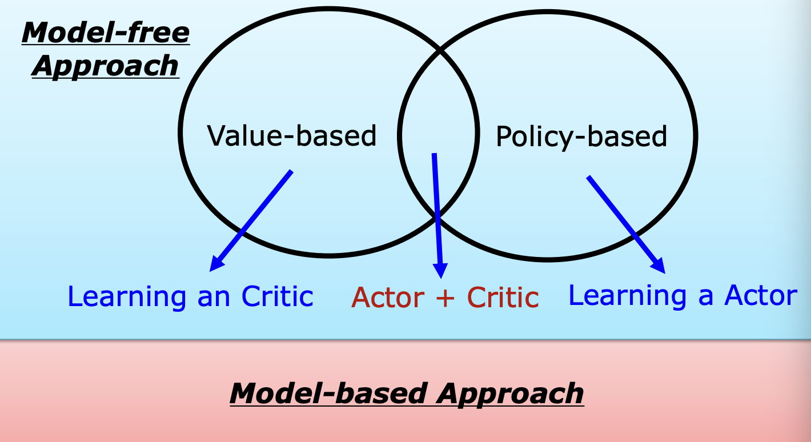
4.1 Model-based vs Model-free¶
- 免模型方法 (Model-free Approach)：智能体不尝试理解环境运行的底层逻辑（即不预测下一个状态 \(s'\) 或奖励 \(r\)），而是直接通过与环境的交互（试错）来学习。这是目前深度增强学习中最主流的方向。
- 有模型方法 (Model-based Approach)：智能体先学习一个关于环境的模型，尝试模拟现实世界的运转逻辑，并利用这个模型进行规划（Planning）。
4.2 Value-based vs Policy-based¶
- Value-based RL
- 学习一个 critic / value function，用来估计某个状态或动作的长期回报
- Policy-based RL
- 学习一个 actor / policy，直接优化从 state 到 action 的映射
- Actor-Critic
- 同时学习 actor 和 critic
- critic 负责评价，actor 负责行动
Part II: Value-based RL¶
1. Q-Learning¶
Q-function 用来估计：在状态 \(s\) 下采取 action \(a\)，之后按照策略 \(\pi\) 行动，可以得到多少长期回报
其中：
- \(r_{t+1}\) 表示 \(t+1\) 时刻得到的 reward
- \(\gamma\) 是 discount factor，范围通常在 \([0,1]\)；\(\gamma\) 越大，agent 越重视长期回报
1.1 Bellman Equation¶
Q-function 满足 Bellman equation 的递归表示：
最优价值函数定义为：
得到 \(Q^*\) 后，最优策略可以直接写成：
最优 Bellman 方程为：
1.2 Value Iteration¶
核心思想：通过不断改进某个状态下某个动作的价值评估，让 agent 学会如何最优行动
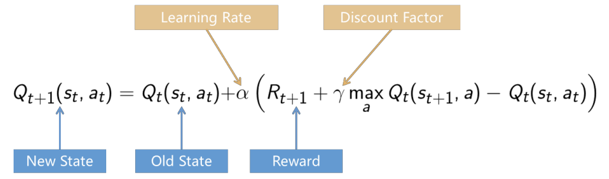
关于Q-learning 的公式
原公式可以改写成：
其中：
| 变量 | 数值 | 意思 |
|---|---|---|
| \(Q (s, a)\) | \(2\) | 原本认为该动作的价值（此处可以理解为最终的期望）是 \(2\) |
| \(r(R_{t+1})\) | 1 | 在 \(s_t\) 状态做 \(a_t\) 动作，立刻得了 \(1\) 分 |
| \(\gamma\) | \(0.9\) | 对未来的重视程度较高 |
| \(\max Q (s', a')\) | \(3\) | 到了新状态 \(s'(s_{t+1})\) 后，最好的动作 \(a'\) 价值是 \(3\) |
| \(\alpha\) | \(0.5\) | 学习率是 \(0.5\) |
| 先算目标值： |
旧 \(Q\) 值是 2，新目标是 \(3.7\)，说明原来低估了：
更新：
所以这个格子的 Q 值从 2 更新成 2.85。
下面的伪代码展示了 Q-Learning 的循环迭代逻辑：
- 初始化：随机生成 Q 表的值
- 选择并执行动作：根据当前策略（通常是 \(\epsilon\) -greedy）选择动作 \(a\)
- 观察反馈：获得奖励 \(r\) 并进入新状态 \(s'\)
- 计算并更新：利用上述公式计算 TD 误差并更新 Q 表中对应的条目
- 状态更替：将新状态设为当前状态，重复上述过程直到任务结束
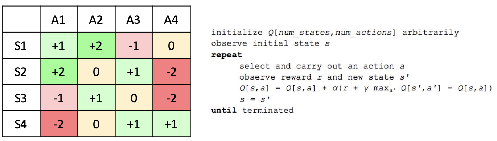
2. Deep Q-Network (DQN)¶
- 在 2013 年 DeepMind 发表 Deep QNetwork (DQN) 相关工作之前，强化学习 (Q-learning) 已经进入了瓶颈，主要原因是状态的维度灾难
- DQN 的基本思想：
用深度神经网络近似 Q-function：
Nature DQN
DeepMind 的 DQN 在 Atari Games 上展示了深度强化学习的潜力。
它把 CNN 的表征能力和 Q-Learning 的长期决策能力结合起来，使 agent 可以直接从像素输入中学习玩游戏。
2.1 DQN Loss¶
DQN 的目标值为：
loss 可以写成：
也就是：
2.2 Why DQN is Unstable¶
在 DQN 之前，直接用深度神经网络做 Q-Learning 往往会失败，主要原因是不稳定：
- Reward 与 Q-value 的尺度未知
- 不同 Atari 游戏的分数尺度差异很大，比如一个游戏奖励可能经常是 1，另一个游戏一次可能给几百或几千分
- 如果直接训练，TD error 可能非常大，梯度也会不稳定
- 连续输入高度相关
- 戏画面是一帧接一帧来的，相邻图像差别很小。如果神经网络按时间顺序训练，相当于连续喂给模型大量相似样本，容易过拟合最近状态
- Q-value 细微变化会导致 policy 剧烈抖动
- 因为 action 由 \(\arg\max_a Q(s,a)\) 决定
- Q-value 排名一点点变化，就可能导致完全不同的 action
2.3 DeepMind's Solutions¶
DeepMind 提出了几个关键技巧：
- Reward Clipping / Normalization
- 将 reward 控制在合理范围内，避免 Q-value 尺度过大
- Experience Replay
- DQN 使用 experience replay，把经历 \((s, a, r, s')\) 存进 replay memory
- 再随机抽 minibatch 训练，从而打散时间相关性，平滑数据分布变化
- Freeze Target Q-network
- 维护两个网络：online Q-network 和 target Q-network
- Online 网络正常更新；target 网络隔一段时间才从 online 网络复制一次参数，中间保持不变，让学习过程更稳定
使用 target network 后：
其中 \(\mathbf{w}^{-}\) 表示 target Q-network 的参数。
2.4 Improvements after Nature DQN¶
Nature DQN 之后，DeepMind 和后续工作提出了很多改进：
- Normalized DQN
- Prioritized Experience Replay
- 根据 transition 的 TD error / surprise 分配采样优先级
- 让模型更频繁学习“它还没学好”的经验
- Double DQN
- 缓解 \(\max\) 操作导致的 Q-value overestimation
- Dueling Network
- 将 state value 和 action advantage 分开建模
- 适合很多 action 对结果影响不大的状态
Part III: Policy-based RL¶
1. Policy¶
策略（Policy -- \(\pi\)）：个体的行为，是从 state 到 action 的映射
- Deterministic Policy，确定性策略直接输出一个 action：
- Stochastic Policy，随机策略输出 action 的概率分布：
2. Robot in a Room¶
最优策略不仅取决于目标位置，还强烈依赖环境模型和 reward structure。
假设
- 到达某个格子 reward 为 \(+1\)；到达危险格子 reward 为 \(-1\)
- 每走一步有 step penalty，例如 \(-0.04\)
- action 可能是随机的，例如选择 UP 时：80% 真正向上；10% 向左；10% 向右
Environment Matters¶
如果 action 是确定性的：
- 选择 UP 就一定向上，最优策略通常是 shortest path
如果 action 是随机的： - shortest path 可能会经过危险格子旁边，agent 需要考虑动作偏移带来的风险
- 最优策略可能会绕路，避开 \(-1\) 附近的区域
Reward Structure Matters¶
step penalty 会改变最优策略：
- 如果每步惩罚很大，例如 \(-2\)：agent 会更急于结束 episode，倾向 shortest path
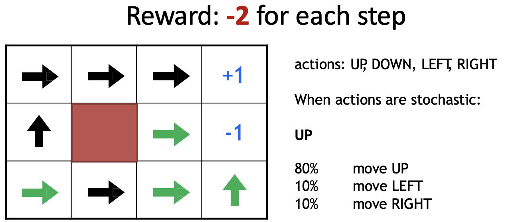
- 如果每步惩罚较小，例如 \(-0.04\)：agent 愿意绕路避险
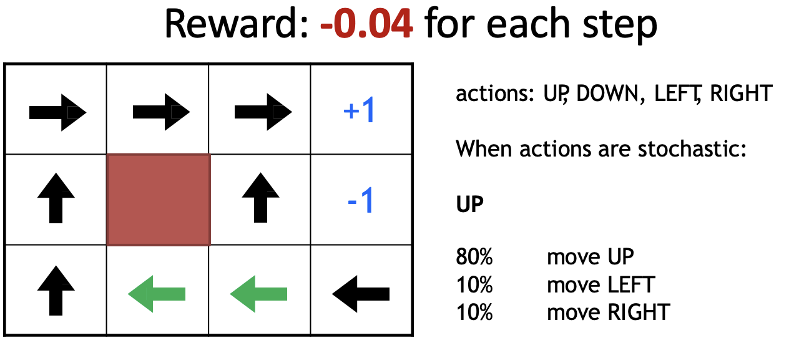
- 如果每步 reward 为正，例如 \(+0.01\)：agent 可能倾向于走更长路径
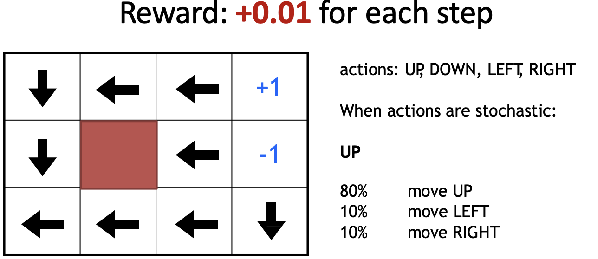
3. Policy Gradient¶
Actor 是一个神经网络：
- Input: the observation of machine represented as a vector or a matrix
- Output: each action corresponds to a neuron in output layer
- action 可以通过概率采样，也可以取最大概率 action
- 如果 action 是连续的，actor 也可以输出连续分布的参数，例如高斯分布的均值和方差
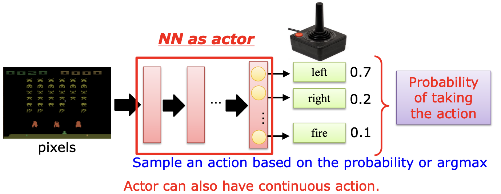
3.1 Goodness of an Actor¶
给定 actor \(\pi(s)\) 神经网络参数 \(\theta^\pi\)，让它与环境交互得到一条 trajectory：
整条 trajectory 的总回报为：
因为 actor 本身可能是随机的，环境也可能是随机的，所以即使用同一个 actor，每次得到的 \(R(\tau)\) 也可能不同。
因此我们优化的是期望回报：
3.2 Policy Gradient Formula¶
神经网络的参数更新公式：
Policy Gradient 的核心公式（对 \(\theta\) 求偏导）：
trajectory 的概率可以分解为每一步 action 的概率，因此：
3.3 Intuition¶
如果在 trajectory \(\tau\) 中，agent 在状态 \(s_t\) 采取了 action \(a_t\)：
- 当 \(R(\tau)>0\)：
- 增加 \(\pi_\theta(a_t|s_t)\)，以后更可能采取这个 action
- 当 \(R(\tau)<0\)：
- 减少 \(\pi_\theta(a_t|s_t)\)，以后更少采取这个 action
Warning
- Policy Gradient 使用的是整条 trajectory 的 cumulative reward，而不是某一步 immediate reward。
- 因为某个 action 的真正影响可能要很多步之后才体现出来。如果只看当前 \(r_t\)，会错误地惩罚“短期吃亏但长期有利”的 action。
Part IV: Value + Policy¶
1. Critic¶
Actor 决定行动，而 critic 不直接决定 action。
Critic 的作用是：给定 actor \(\pi\)，评价它在某个 state 下有多好。
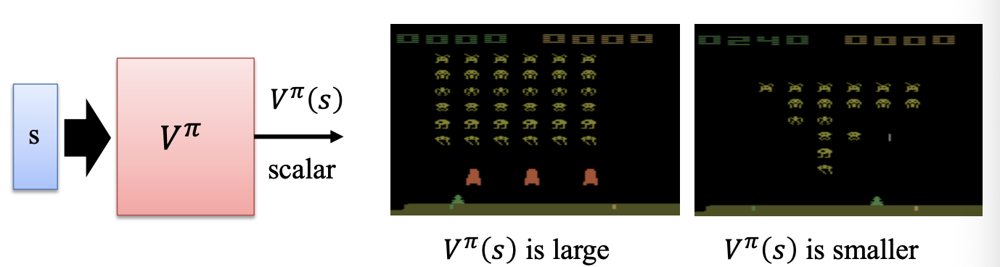
状态价值函数：
- 如果 \(V^\pi(s)\) 很大，说明从这个状态出发，在当前策略下预期能获得较高回报。
2. How to Estimate \(V^\pi(s)\)¶
2.1 Monte-Carlo Approach¶
MC 方法：让 critic 观察 actor 玩完整个 episode
- 从看到状态 \(s_t\) 开始，直到 episode 结束，累计得到的 reward 为：
- 可以用 \(G_t\) 作为 \(V^\pi(s_t)\) 的监督信号：\(V^\pi(s_t)\approx G_t\)
优点：估计直观，不需要 bootstrapping
缺点：必须等 episode 结束，长 episode 中学习反馈太慢，方差较大
2.2 Temporal-Difference Approach¶
TD 方法不等到 episode 结束，而是利用一步之后的 value 进行更新：
TD error：
Critic 可以最小化：
MC vs TD
- Monte-Carlo：等到最后，用真实累计回报更新，bias 小但 variance 大
- Temporal-Difference：边走边更新，使用当前 value 估计作为 bootstrap，bias 较大但 variance 较小
3. Actor-Critic¶
Bug
回忆 REINFORCE 的梯度公式：
问题： 计算的是整条轨迹的总回报，方差极大。
即使三个轨迹中 agent 的动作几乎一样，回报差异巨大 → 梯度估计抖动严重
Actor-Critic 同时学习 policy 和 value function：
- Actor：\(\pi_\theta(a|s)\)，负责选择 action
- Critic：\(V_\phi(s)\)，负责评价 state 或 action 的好坏
基本流程：
1. Actor 与环境交互，采样 trajectory
2. Critic 根据 MC 或 TD 学习 \(V^\pi(s)\)
3. Actor 根据 critic 的评价更新策略
Structure
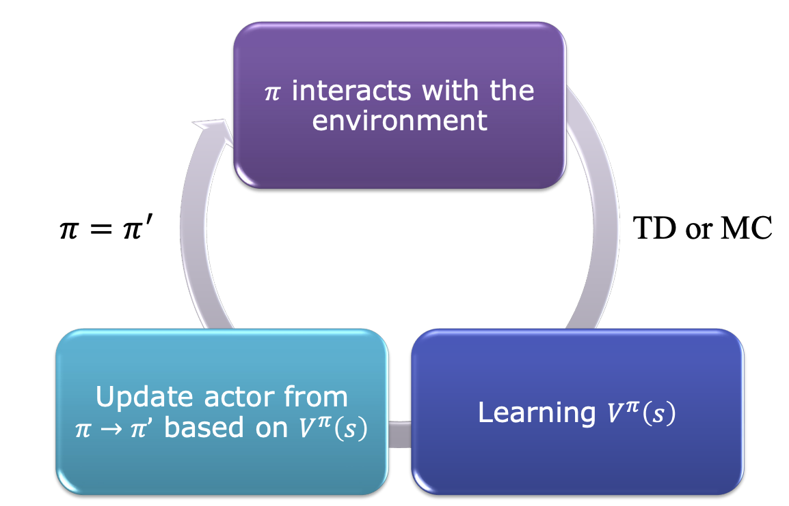
Actor 和 critic 的网络参数可以部分共享：
- 前面的 representation layers 共享，最后分出 policy head 和 value head。
4. Advantage Actor-Critic¶
直接用 \(Q^\pi(s, a)\) 做评分有高方差问题（因为 \(Q\) 值本身的尺度很大），因此引入 Advantage Function
- Advantage Function 衡量的是：某个 action 比当前状态下的平均水平好多少
- 在 TD 形式中，可以用 TD error 近似 advantage：
Baseline
- \(V^\pi (s)\) 就是 baseline，它满足 \(\mathbb{E}_{a~\pi}[\nabla_\theta \log\pi(a|s)\cdot b(s)]=0\)
- 而且只依赖于 \(s\)，不依赖于 \(b (s\))，因此不会改变梯度的期望方向，但可以有效降低方差
- baseline 是“参考线”，减去它后，梯度信号只反映"比参考好/差"，去掉了绝对值波动
4.1 Intuition¶
如果Advantage Function为正：
- 说明实际拿到的 reward \(r_t^n\) 比 critic 原本预期的结果更好 \(\rightarrow\) 增加 \(\pi_\theta(a_t|s_t)\)
如果Advantage Function为负：
- 说明结果比预期更差，advantage 为负：减少 \(\pi_\theta(a_t|s_t)\)
Policy Gradient 可以改写为：
4.2 Entropy Regularization¶
Actor-Critic 常加入 entropy regularization：
- 更大的 entropy 表示策略更随机，有助于 exploration
- 训练时可以鼓励 actor 保持一定随机性，避免过早陷入局部最优。
5. Asynchronous¶
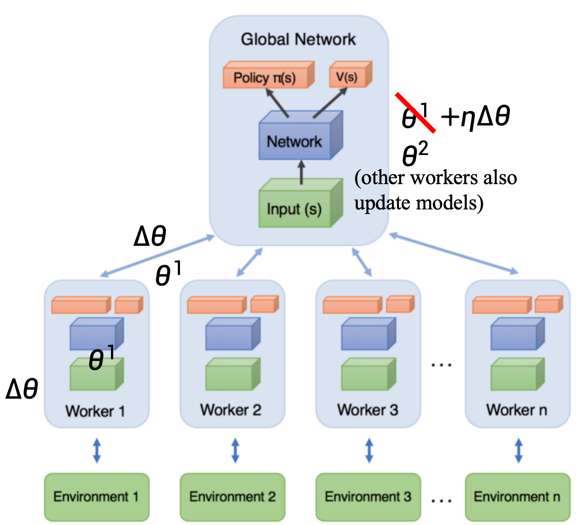
核心思想是同时运行多个 worker：
- 每个 worker 复制一份 global parameters
- worker 与自己的环境交互，采样数据
- worker 在本地计算 actor 和 critic 的梯度
- 将梯度异步更新到 global model
- 其他 worker 也同时更新 global model
Why Asynchronous
异步训练的好处：
- 多个 worker 产生不同的数据，降低样本相关性
- 不需要单一 replay memory 也能获得较丰富的经验
- 提高采样效率
- 多个 actor 同时探索，可以缓解局部最优问题